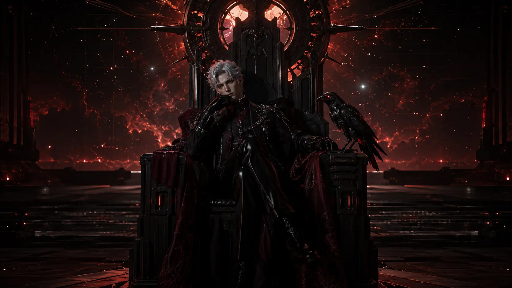
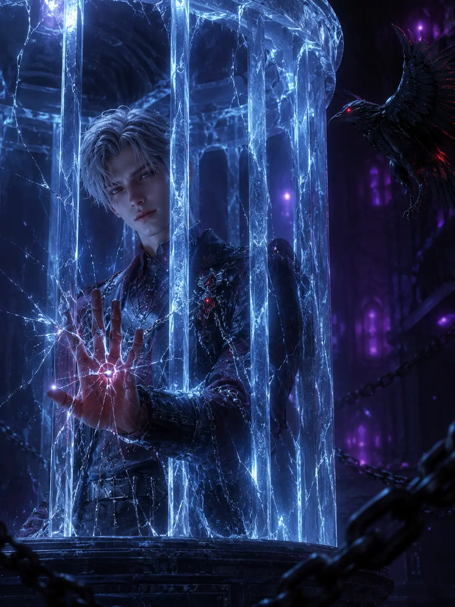
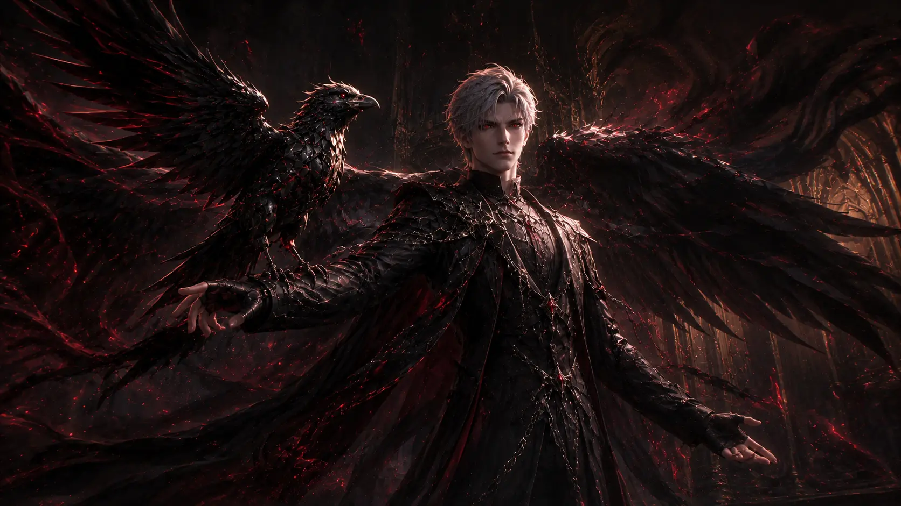
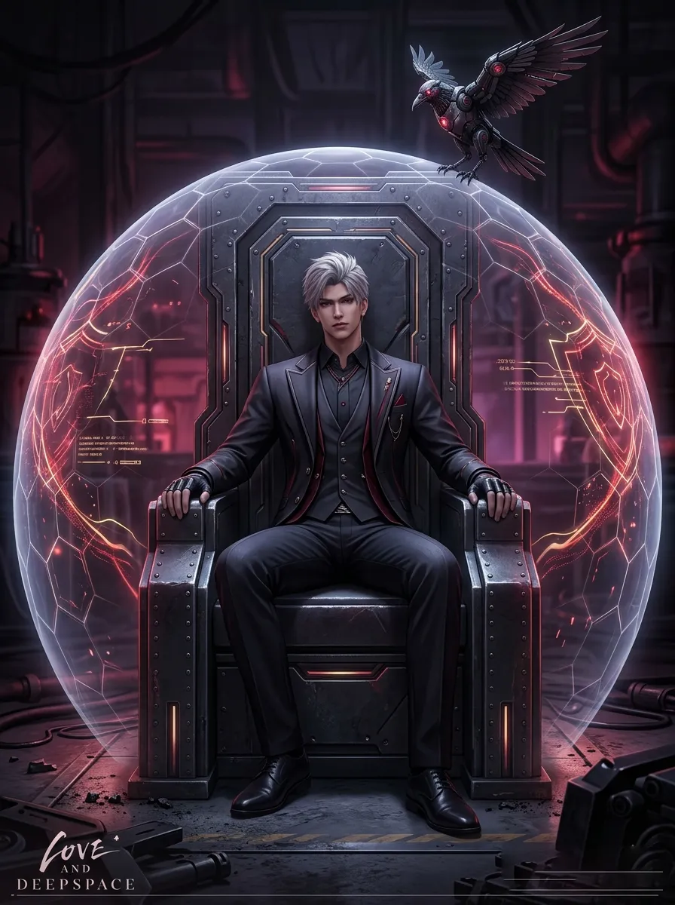
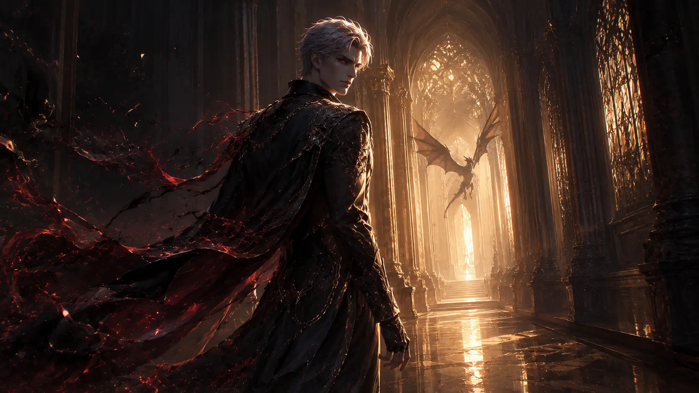
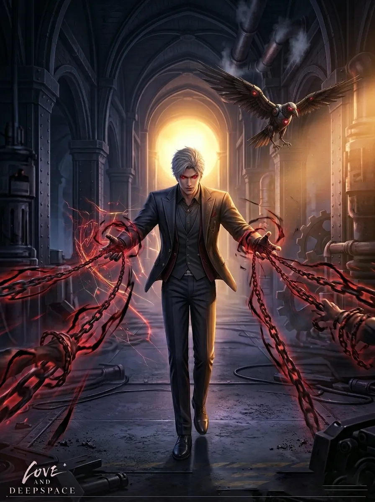
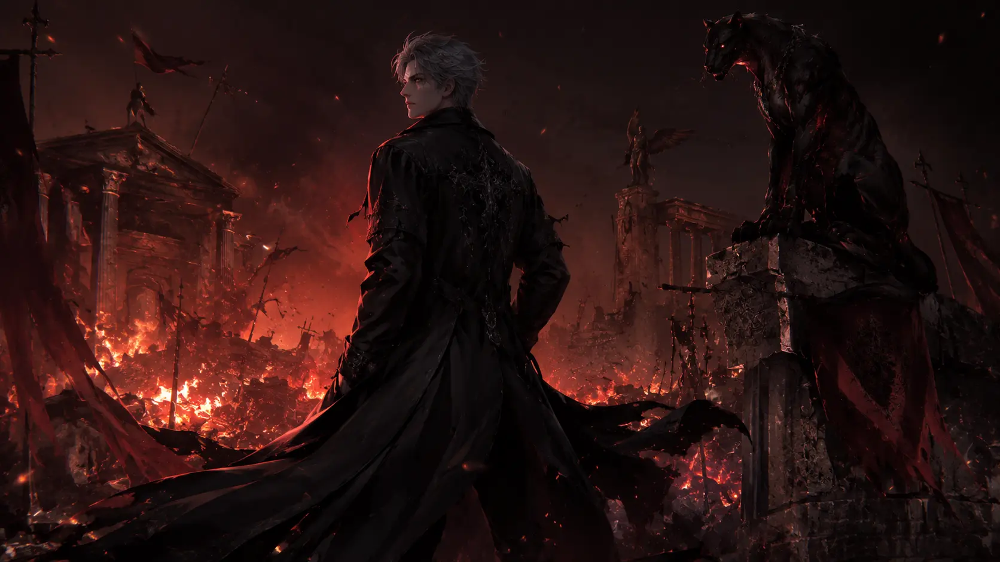

01. BIOGRAPHY & LORE ARCHIVE
Known only as Sylus, he emerged from the shadows of the N109 Zone—a lawless wasteland where the strong prey on the weak—and systematically annihilated every rival faction to establish Onychinus. His presence is a paradox: a criminal mastermind with a code of honor that few can comprehend. Reports suggest he was born into the upper echelons of society before a catastrophic event redirected his path toward the abyss.
Unlike other Hunters, his Evol concentration is so dense that it affects the surrounding environment, causing electronic interference and a palpable pressure. He views the Protostar with a possessive intensity, claiming that their fates were intertwined long before they officially met. His mechanical crow, Mephisto, is rumored to be a vessel for his secondary energy consciousness, allowing him to monitor the entire zone simultaneously.
02. TACTICAL SKILL BREAKDOWN
Basic Attack: Ravage
Performs 5 consecutive strikes. The 5th strike launches the target into the air and marks them with "Eye of Mephisto," reducing their DEF by 15% for 8 seconds.
Resonance: Pulse Shackle
Sylus and Hunter link energies to create a vacuum field. Enemies caught in the field take 240% Energy DMG per second and are stunned for 3 seconds.
Ardent Oath: Wild Echo
The ultimate execution. Sylus transforms into his primal form, dealing 1500% DMG. If the target's HP is below 20%, this skill instantly executes them.
03. ASCENSION & RANK BONUSES
R1
Core Link Improvement: Increase Crit Rate by 10% when attacking marked targets.
R2
Unstoppable Force: Ardent Oath gain 100% Life Steal for 12 seconds after activation.
R3
Absolute Control: Increases Pulse Shackle duration by 2s and adds a 40% DMG multiplier.
04. OPTIMIZED PROTOCORE BUILDS
| Build Type | Slot Alpha (Δ) | Slot Beta (Β) | Sub-stats Priority |
|---|---|---|---|
| Critical Burst | Weakness DMG% | Crit DMG% | Crit Rate > ATK% > DMG Bonus |
| Endurance King | HP Bonus% | DEF Bonus% | Life Steal > DEF > HP |
05. INTERCEPTED VOICE FILES
"The world is divided into two types: those who hunt, and those who are hunted."
"Your heart is beating too fast. Are you afraid, or just excited to be with me?"
06. SIGNATURE MEMORIES

[NOOSE]Solar Path - Core DPS

[CAPTIVE]Lunar Path - Burst

[RAVEN'S WING]Solar Path - Support

[IRON THRONE]Lunar Path - Defense

[REDEMPTION]Solar Path - Hybrid

[SHADOW BIND]Lunar Path - Control

[EMBERS OF THE PAST]Lunar Path - Legacy